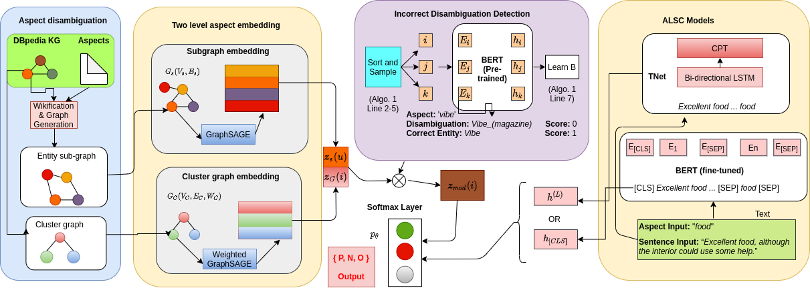
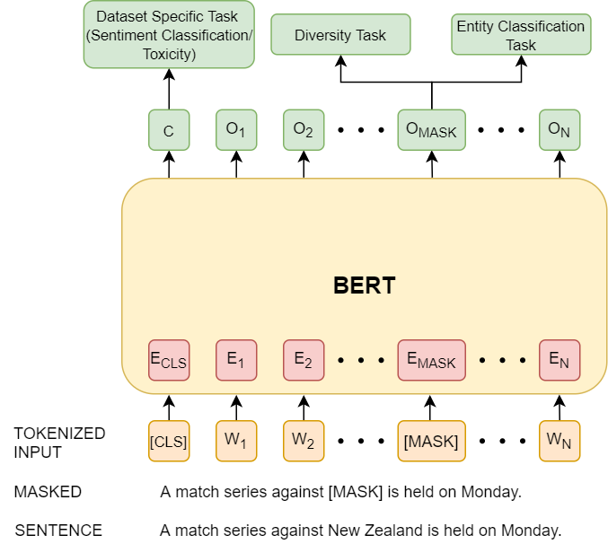

I am a second-year PhD fellow at the CopeNLU group, University of Copenhagen, supervised by Prof. Isabelle Augenstein and Asst. Prof. Pepa Atanasova. My research sits at the intersection of explainability, fact-checking, and robustness in large language models — with a particular focus on interpretable reasoning for misinformation detection and trustworthy NLP systems.
Before Copenhagen, I was a Research Engineer at the Center for Cyber Security, NYU Abu Dhabi (2022–2024). I hold an MS by Research from IIT Kharagpur, where my thesis developed scalable, explainable methods for Aspect-Based Sentiment Analysis.
I am open to academic visiting positions and research scientist internships in industry for 2025.
My work focuses on making NLP models more interpretable, robust, and trustworthy — especially in high-stakes scenarios like automated fact-checking and misinformation detection. Current threads include understanding in-context learning mechanisms in LLMs, compositional proof reasoning on out-of-distribution data, knowledge probing, and constrained/controlled text generation for counter-narrative and emotional response tasks.

Proposes a two-level global-local entity embedding scheme for joint training of knowledge-graph-based aspect embeddings and ALSC models, along with a novel incorrect disambiguation detection technique. Achieves a consistent 2.5–4.1 point improvement over BERT-based baselines on benchmark datasets, alongside multi-modal explanation generation.

Introduces new methods to inject hard constraints and domain knowledge into pre-trained language models for generating fair and privacy-respecting synthetic text data, addressing ethical concerns in masked entity prediction tasks.